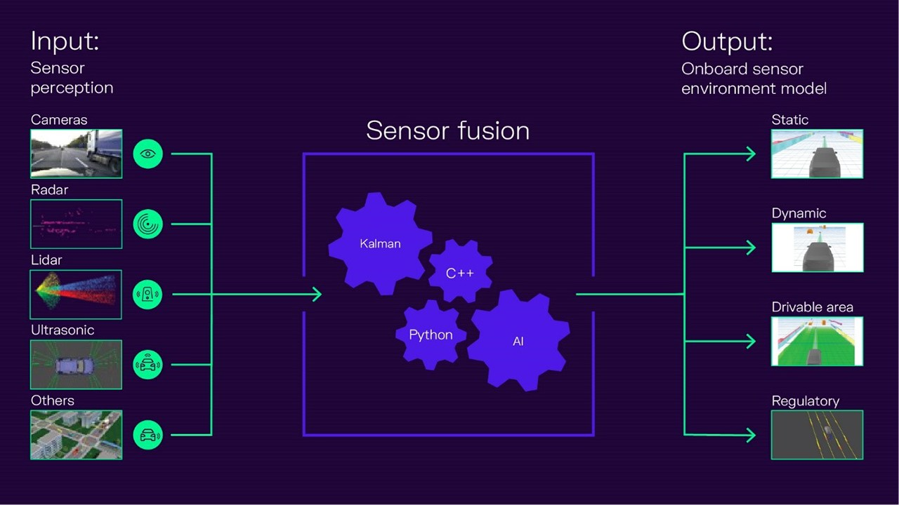

|
Ocean Wong
I am a senior staff Algorithm Engineer at Invo Auto Technology Co., Ltd in Beijing, where I work on computer vision and machine learning.
I am passionate about Artificial Intelligence, Self-driving, data analysis and computer vision. During my free time, I enjoy participating in Kaggle competitions, and got competitions expert tier.
Email |
Kaggle |
Leetcode |
Github
|

|
- 8+ years of experience in Machine Learning, Deep Learning, and Computer Vision
- Research experience both in the industry and academic settings.
- Strong communication, and teamwork skills.
- Quick learning abilities and result-oriented approach.
- IELTS 7.0, College English Test Band 6(CET 6), Proficiency in English.
- 2022 - PresentInvo Auto Technology Co., Ltd. Senior Algorithm Engineer .
- 2021 - 2022 University of British Columbia, AI Researcher
- 2015 - 2021, Beijing Sphyrna Technology Co., Ltd. Artificial Intelligence Algorithm Engineer
- 2011 - 2015, Heilongjiang Bayi Agricultural University. B.Sc. in Information and Computing Science
- [Dec 2019] Competition Expert Tier. TOP 0.67%(1072/159,193)
- [Dec 2019] Solo Silver Medal. Lyft 3D Object Detection for Autonomous Vehicles Kaggle; PB Top 6%(30/546)
- [Oct 2019] Severstal: Steel Defect Detection Kaggle; LB Top 7%(182/2427); PB Top 13%(301/2427)
- [Sep 2019] Solo Silver Medal APTOS 2019 Blindness Detection Competition Kaggle; PB Top 2%(55/2928).
- [Apr 2014] First Class Professional Scholarship
- [Sep 2013] 2nd Prize as team leader, China Undergraduate Mathematical Contest in Modeling(CUMCM), China
- [May 2013] 1st Prize as team leader, Northeast Undergraduate Mathematical Contest in Modeling, HeiLongJing, China
|
|
BEV Parking Slot Detection
This project aims to refactor and optimize a parking slot detection system that started in 2019. The original project has the following problems: The code has serious coupling, redundancy, chaos and other issues, making it difficult to maintain and extend. The underlying architecture design is unreasonable, causing the upper layer logic to frequently patch the underlying bugs. The tracking module’s tracking algorithm and matching algorithm cannot meet the new scenario’s requirements and need to be redesigned.
The main work of the project includes the following aspects:
Refactor the entire project, follow good coding standards, and improve the code’s readability, maintainability and extensibility.
Redesign the underlying architecture, ensure its stability and correctness, and reduce the burden of the upper layer logic.
Redesign the tracking module based on vehicle kinematics using trajectory prediction, and improve its performance and accuracy in new scenarios.
Modify the logic of the parking space generation module, perform corner fusion first and then generate parking spaces, and improve the quality and quantity of parking spaces.
Optimize the simulation module, add a sensor fusion module, solve the problem of sensor timestamp alignment, and improve the credibility of the simulation results.
|
|
|
BEV Lane Detection
BEV Lane Detection is a project that aims to detect the lane markings and the intersection type of a road using a bird's eye view (BEV) image.
The main work of the project includes the following aspects:
Feature extraction: The BEV image is segmented into binary images using a thresholding method. Then, a feature extraction method is applied to the binary images to obtain the edge features of the lane markings.
Clustering algorithm: The edge features are grouped into clusters. The clusters represent the candidate lane segments that are further filtered based on their orientation and length.
Fitting algorithm: A straight line is fitted to each cluster using a least squares method. The parameters of the line are used to calculate the slope and the intercept of the lane segment.
Backtracking algorithm: A backtracking algorithm is used to find the optimal solution space for the lane detection problem. The algorithm starts from the bottom of the image and searches for the best pair of left and right lane segments that satisfy some constraints, such as distance, angle, and continuity. The algorithm then moves up to the next row of clusters and repeats the process until it reaches the top of the image or no valid pair is found.
Tracking algorithm:The track estimation algorithm is based on the principle of dead reckoning, which is a way of calculating the position and orientation of a moving object by using its previous state and motion information. Tarking can handle complex road conditions, such as occlusions, shadows, and noise.
Intersection type determination: Based on the information of the detected lane segments, such as their number, position, orientation, and slope, the intersection type of the road is determined. The possible intersection types are: straight, left turn, right turn, crossroad, T-junction, or unknown.
|

|
Sensor Fusion
The purpose of this project is to use multi-sensor data for vehicle environment perception.
The main work of the project includes the following aspects:
Data parsing and alignment: Parse the data from four video signals and CAN signals, extract the video frames and vehicle state information, and align the data according to the timestamps, ensuring the data synchronization.
Design and implement a millimeter-wave radar and camera fusion scheme, achieve spatial and temporal synchronization of the two sensors, perform point cloud clustering on the millimeter-wave radar data, use UKF to track multiple targets, associate targets, and thus achieve detection and identification of obstacles around the vehicle1.
|
|
|
Video de-identification
Video de-identification project is a project that uses deep learning techniques to detect and eliminate sensitive information such as license plates and faces in the car-end data, aiming to protect the privacy and security of the information subjects.
The main work of the project includes the following aspects:
Data automatic annotation: A data automatic annotation pipeline was established, which used a large model to pre-annotate the raw data, and then performed manual verification and correction, improving the annotation efficiency and quality..
Data mining and hard sample analysis: A set of data mining and hard sample analysis tools chain was designed, which performed operations such as statistics, filtering, clustering, visualization, etc. on the data, discovered and solved the problems and difficulties in the data, and enhanced the diversity and representativeness of the data.
Car-end real-time detection model: A lightweight car-end real-time detection model was designed, which used a fish's eye view image as input, combined with attention mechanism and multi-scale feature fusion techniques, achieved efficient detection of sensitive information such as license plates, faces, etc.
Car-end detection performance evaluation: The detection performance of the car-end detection model in different scenarios was evaluated, using indicators such as accuracy, as well as visualization methods, to show the performance and advantages of the model. Finally, the car-end face detection accuracy reached 91.62%, and the license plate detection precision reached 90.52%.
|
|
|
Blind Spot Detection System
The BSD system detects other vehicles and pedestrians in the blind area, and warns to help the driver to drive safely. Provides the driver with visual and audial warning when parking or lane changes
Brief introduction: Blind Spot Detection system
Designed clean and analysis fisheye image data system(label image data is a boring and laborious job; I designed an auto label system, and the Efficiency increased by 90% ).
Designed and trained our detection model on our fisheye image data.
Optimized our detection model, we wanted to Run algorithms in real-time on low-end chips(Allwinner T5). So I need to trim our model, reduced Model parameters from 1.22M to 0.3M, reduced Model calculation from 1.2 BFlops to 0.139 BFlops, increased model mAP from 90% to 91%
|
|
|
Rover robot
Rover robot uses senses(radar, IMU, and Odometry) , which enable robot build maps, avoid obstacles automatically and cruise at fixed points
Brief introduction: Rover robot
Designed robot chassis.
Designed Unicycle Robot Model.
Used Odometry to Track Robot Movement.
Deployed google-cartographer, ros-navigation algorithm on rover robot.
|
|
|
Driver Status Monitor System
Driver Status Monitor uses a camera to capture an image of the driver’s face and establishes the driver’s condition based on visual analysis. It detects carelessness, distraction and drowsiness, Smoking, Phone and then alerts the driver of any potential danger.
Brief introduction: Driver Status Monitor
Designed driver face, key points and behaviour detetion neural networks.
Implemented driver face, key points and behaviour detetion neural network by caffe.
Tained a big neural network to label and clean our driver image data.
Used our labeled data to train our neural networks.
Optimized train Strategies(implemented Online Hard Example Mining algorithm), Accuracy increased from 98% to 99.3%.
Optimized detection Strategies(used Optical flow algorithm), speed increased from 5HZ to 26HZ; Increased 5 times, so we can run our model on embeded system(Rock Chip RK3399).
|
Template modified from here.
|
|